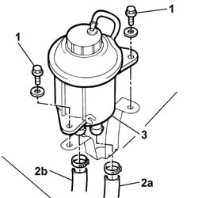
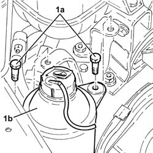
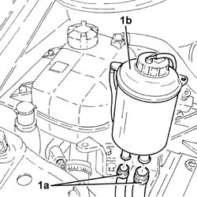

4130B10 power steering fluid resevoir r r
- Path
- Procedures > 41 STEERING UNIT > 4130 POWER STEERING > 4130B POWER STEERING HYDRAULIC SYTEM > 4130B10 power steering fluid resevoir r r
- Kind
- repair procedure (removal / refitting; the operation number is the code)
- Applies to
- all engines; all production periods
- Interactive page
- https://sloeber94.github.io/elrnDB-fDbl/en/#/2584723
Applies to: all engines; all production periods
 Removing
Removing
 Refitting
RefittingPlace the car on a lift.
Disconnect the battery negative terminal lead.
Applies to: all engines; all production periods
Refitting
RemovingConnect the tank supply and return pipes.
Secure the pipes to the tank using retaining bands.
Secure the power assisted steering tank to the mounting bracket.
 | Fastening | Component | Ø | Value (daNm) |
|---|---|---|---|---|
- | Bolt | POWER STEERING FLUID RESERVOIR | M6 | 0.85 |
Applies to: engines: 1.2 8v, 1.4 8v; all production periods
Applies to: engines: 1.2 8v, 1.4 8v, 1.9 DIESEL; all production periods
Op. 7055B54 PROTECTION/GUARD UNDER ENGINE - R.R.
1. Undo the bolts fixing the tank to the mounting bracket.
2. Lift up the tank and disconnect the bands for the supply pipe (2a) to the pump and the return pipe (2b) from the power assisted steering box.
Place a container under the tank to collect the fluid.
3. Remove the tank from the engine compartment.

Applies to: engines: 1.2 8v, 1.4 8v; all production periods
Applies to: engines: 1.9 JTD 8V; all production periods
.
Connect the battery negative terminal lead.
Applies to: engines: 1.9 JTD 8V; all production periods
Removing
RefittingRemove the power steering fluid reservoir cap and drain the fluid using a suitable syringe.
1. Undo the bolts (1a) and raise the power steering fluid reservoir (1b) as much as necessary.

Applies to: engines: 1.9 JTD 8V; all production periods
1. Loosen the bands and disconnect the inlet and outlet hoses (1a), then remove the power steering fluid reservoir (1b).

Applies to: engines: 1.9 JTD 8V; all production periods
Refitting
RemovingConnect the input and output pipes to the power steering reservoir and tighten the bands.
Refit in its seating the power steering fluid reservoir and secure it with its bolts.
Top up the power assisted steering system using the recommended fluid.
 | Type | Component | Name | Qty. |
|---|---|---|---|---|
- | Oli [l] | POWER ASSISTED STEERING CIRCUIT | TUTELA GI/A | 1.3 |
Bleed the power steerign system as described below.
With the front wheels raised off the ground, with the engine switched off, carry out 4-5 complete steering wheel rotation cycles (left and right).
Check and, if necessary, top up the fluid level in the reservoir.
Position the vehicle on the ground and start up the engine.
Carry out 4 - 5 complete steering wheel rotations (right and left).
Top up the fluid level in the reservoir.
Topics linked from this page (2)
Topics that link to this page (12)
- 1004B10 POWER UNIT WITH MANUAL GEARBOX - R.R
- 1008a46 TIMING SIDE POWER UNIT RIGID SUPPORT - R.R.
- 1016C10 cylinder head - r + r and replace gasket
- 1020A20 crank case oil sump - r + r clean seals for sealant application
- 1020D26 flywheel side oil seal cover - r+r
- 1024B10 engine flywheel - r + r for versions with manual gearbox
- 1060E40 supplementary pressure pump - r r
- 1072B50 sleeves connecting air capacity box to inlet manifold is - r+r
- 1084B26 emgine oil intake duct - r r
- 1810A20 clutch - r + r
- 2110A10 manual gearbox and differential - r + r
- 4130B20 power steering pump r r